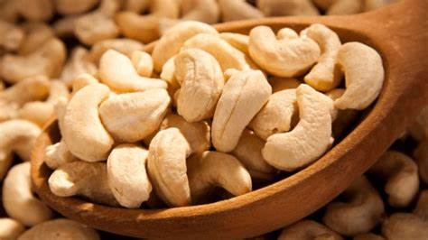
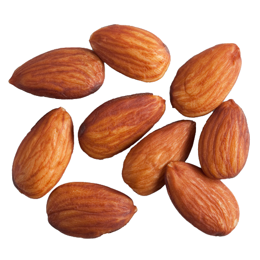
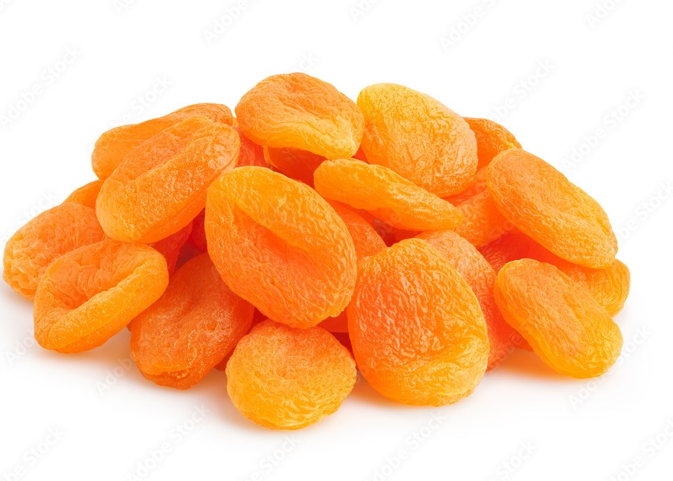
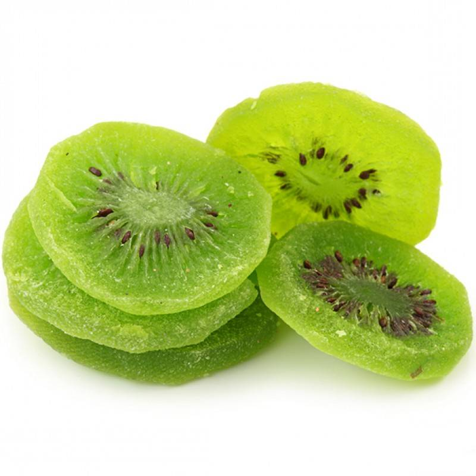
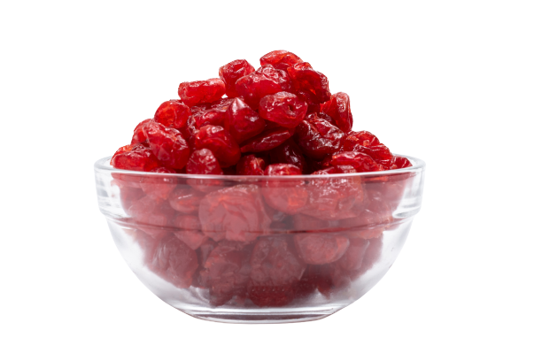
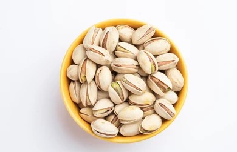
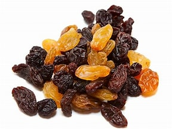
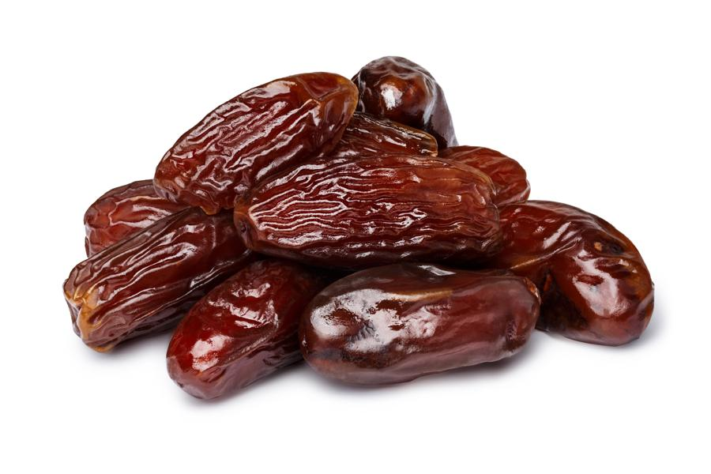
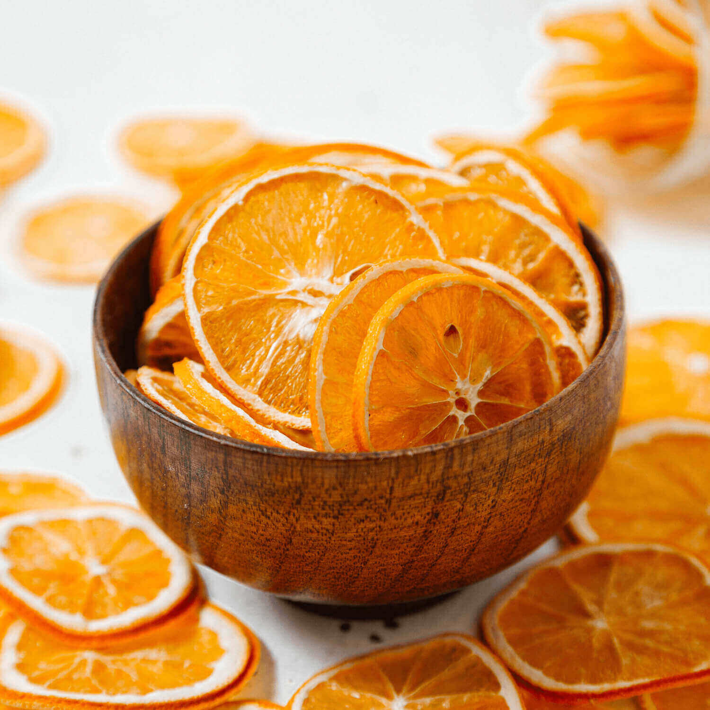
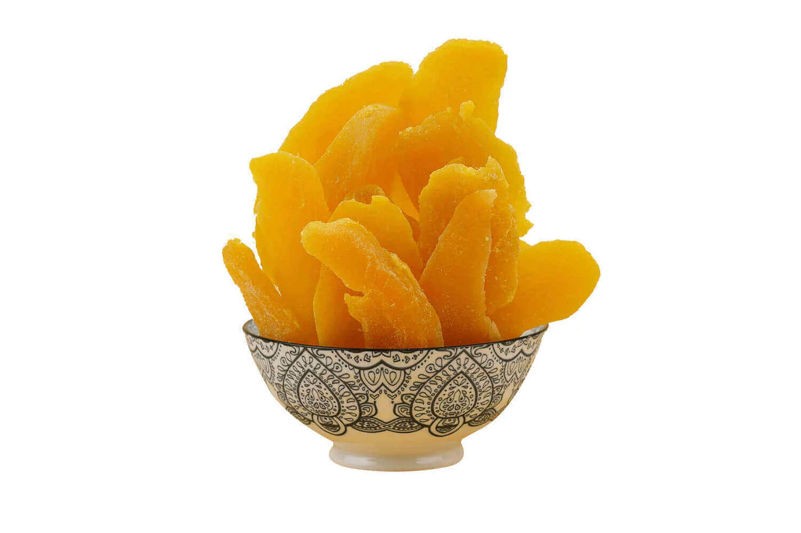

| ITEM NAME | IMAGE | DESCRIPTION | PRICE | |
|---|---|---|---|---|
CASHEWS |
 | Reduced cholesterol Cashews have a bad reputation for containing saturated fat. Heart disease prevention Not only can they lower bad cholesterol, cashews may help prevent heart disease due to their high magnesium content |
Rs.199 | |
ALMONDS |
 | Reduced cholesterol. Almonds deliver a massive amount of nutrients. Almonds are loaded with antioxidants Almonds are high in vitamin E |
Rs.199 | |
DRIED PLUMS |
 |
Prunes and Prune Juice May Relieve Constipation Plums and Prunes Are Rich in Antioxidants They May Help Lower Your Blood Sugar Prunes May Promote Bone Health |
Rs.200 | |
ANGEER |
 |
Figs Control blood pressure and aging Figs Help in weight management: Figs Reduces chances of cancer: Anjeer keeps the reproductive system in checK |
Rs.360 | |
DRIED STRAWBERRIES |
 |
Healthy Alternative to Candy. Tasty Source of Minerals. Lower Bad Cholesterol. |
Rs.499 | |
DRIED APRICOT |
 | May protect your liver May boost skin health High in antioxidants Very nutritious and low in calories |
Rs.600 | |
DRIED KIWI |
 | Preventing Hair Loss kiwis contain high levels of serotonin and antioxidants. Consuming fewer calories is the biblical phrase for losing weight Antioxidants, like vitamins C and E, are beneficial for preventing hair loss. |
Rs.250 | |
DRIED AMLA |
 |
Amla is considered very beneficial for hair and skin. Helps Fight Against the Common Cold Amla & its Positive Effects on Cancer Excellent Anti-inflammatory Properties |
Rs.250 | |
DRIED CHERRY |
 | Dried Cherries Include Antioxidants Dried Cherries Encourage Healthy Cardiovascular Function Promote Healthy Joint Function The melatonin found in cherries encourages healthy sleep patterns |
Rs.310 | |
DRIED BLUEBERRIES |
 |
Blueberries are low in calories but high in nutrients Blueberries are one of the top antioxidant foods Blueberries reduce DNA damage, which may help protect against aging and cancer. Blueberries protect cholesterol in your blood from becoming damaged |
Rs.400 | |
SALTED CASHEWS |
 |
Salted Cashews are rich in protein, with approximately 5 grams per serving. Cashews have had a bad reputation for containing saturated fat. Salted cashews can be part of a heart-healthy diet in moderation. Salted cashews can have about 1.8 mg of iron, about 10 per cent of your daily recommended value. |
Rs.250 | |
DRIED CRANBERRIES |
 |
Eradicates Dandruff Woes Combats Urinary Tract Infection (UTI) Consuming a few dried cranberries will provide ample vitamin C for the daily diet. Dried cranberry is bestowed with the key mineral for optimal muscle function – magnesium |
Rs.280 | |
PISTACHIOS |
 | Low in calories yet high in protein May promote blood vessel health Promote healthy gut bacteria May lower cholesterol and blood pressure |
Rs.350 | |
DRIED BLACKBERRIES |
 |
For such a tiny berry, blackberries are high in fiber. It also helps your body metabolize carbs, amino acids, and cholesterol. reduce free radicals (molecules released by toxins) in the body The review concluded that antioxidants in berry fruits help fight free radicals and alter how brain neurons communicate |
Rs.375 | |
RAISINS |
 | Rich in Nutrients. Helps Maintain Healthy Blood Sugar Levels. Aid in Weight Management. Support Heart Health. |
Rs.150 | |
DATES |
 | Dates are highly rich in soluble fiber, which promotes regular bowel movements and healthy digestion. The antioxidants in dates protect neural cells from oxidative damage. Fructose in dates does not require insulin to be metabolised. |
Rs.374 | |
DRIED ORANGES |
 | You can use dried oranges for a proper lean diet Decoction of dried orange leaves is useful for washing swelling and relieving pain. Oranges and thin sheets between oranges are best medicine for lowering blood. It is a blood thinner and therefore the best way to eliminate facial pimples. |
Rs.650 | |
DRIED MANGO |
 | Support digestion and gut health Immune and enrgy booster Lower bad cholestrol and blood pressure Dried fruits are still a rich source of important vitamins, minerals and fibre,so they can still be consumed in moderation. |
Rs.860 |